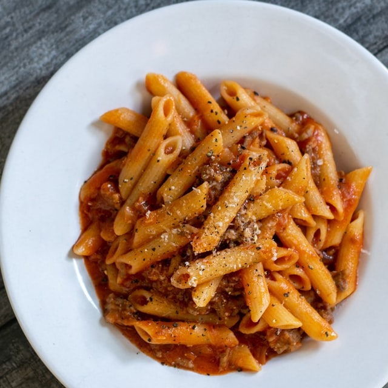

Pasta Recipe

Description
Pasta is a type of food typically made from an unleavened dough of wheat
flour mixed with water or eggs, and formed into sheets or other shapes,
then cooked by boiling or baking.
Ingredients
- 0.25 cup olive oil
- 2 cloves garlic, minced
- 1 eggplant, peeled and cut into 1/2-inch cubes
- 1 (28 ounce) can plum tomatoes with juice, chopped
- 1 (16 ounce) package rigatoni pasta
Directions
-
Heat olive oil in a large skillet over medium heat; cook and stir garlic
until fragrant, 1 to 2 minutes. Add eggplant; cook, stirring constantly,
until eggplant is softened, about 5 minutes. Add tomatoes and juice;
cook until sauce is slightly reduced, about 20 minutes.
-
Bring a large pot of lightly salted water to a boil. Cook rigatoni in
the boiling water, stirring occasionally until cooked through but firm
to the bite, about 13 minutes. Drain and transfer to a serving bowl.
- Pour sauce over pasta.
Nutritional Facts
Per Serving:
295 calories; protein 8.9g; carbohydrates 48.8g; fat 8.3g; sodium 144.7mg.
Back to Main Page